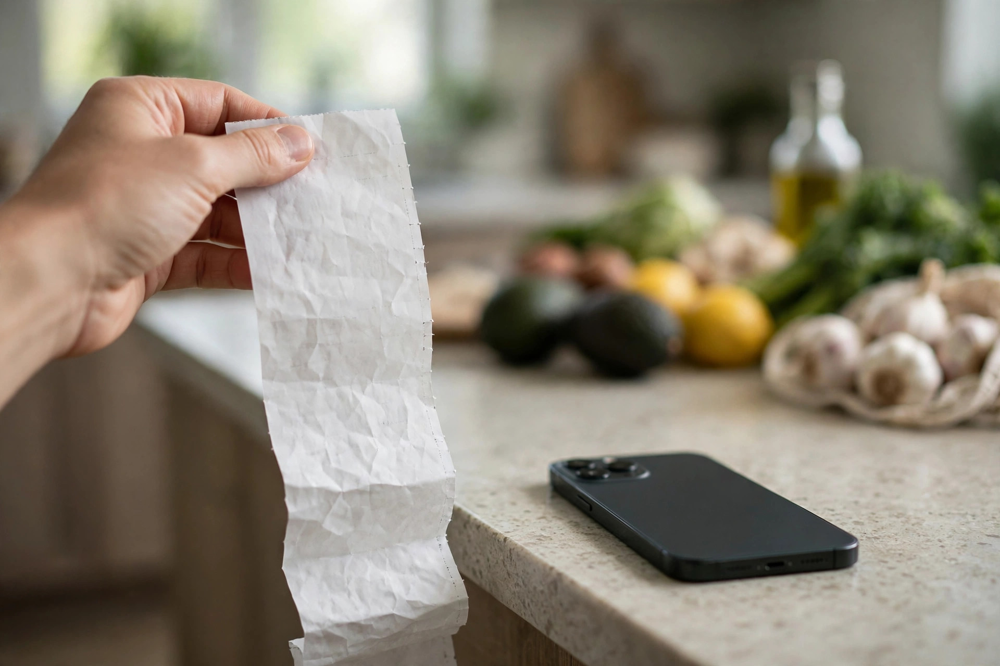

Receipt-scanning apps: the honest walkthrough

Receipt-scanning apps ask for almost nothing: after you shop, take a photo of the paper receipt, and the app gives you points. No surveys, no videos, no special offers to activate first. It is the simplest rewards routine there is, which is exactly why it deserves an honest look. The amounts are tiny, the apps earn their money from your shopping data, and a share of receipts get rejected for reasons that are never fully explained. None of that makes them a bad deal — it makes them a deal you should understand before you hand over a year of grocery receipts. Here is the whole walkthrough, including the part about your data.
What the app actually does with your receipt
A receipt is a detailed record of what you buy, where you buy it, when you shop, and how much you spend. That information is valuable to brands and retailers, who pay market research firms to understand real shopping behaviour. Receipt apps sit in the middle: they collect your receipts, strip out the personal details like your name and payment method, and sell the aggregated, anonymised shopping patterns onward. That is how a photo of a grocery receipt turns into points in your account. The key word is aggregated — a trustworthy app sells patterns across thousands of shoppers, not your individual receipt to the highest bidder. But the details matter, and they live in the privacy policy: what the app collects, how long it keeps it, and who it shares it with. If a policy is vague on those three points, that vagueness is your answer. If you want the same habit applied at the shelf first, our price-per-unit guide saves more per trip than any receipt app will.
The scan routine
- Scan the same day — most apps only accept receipts from the last 7 to 14 days, and old receipts are the most common reason for rejection.
- Photograph the whole receipt — store name, date, every item and the total must be readable. Folded, torn or faded receipts get rejected, so flatten it on a table first.
- Keep the receipt until the points land — if a scan is rejected, support may ask you to resubmit, and a receipt already in the bin cannot be re-photographed.
- Check for bonus offers first — some apps pay extra points for specific brands or products on your receipt. A quick look before you scan can double the return on a normal shop.
- Do not scan the same receipt twice — duplicate submissions are flagged quickly and can get an account restricted. One receipt, one app, one submission.
What you can realistically expect
Set expectations low and you will not be disappointed. A typical grocery receipt earns a small number of points, and it commonly takes many receipts to reach a payout worth a few dollars. Some apps add bonus offers on specific products — buy a named brand, scan the receipt, earn extra — and those bonuses are where most of the value sits. Without them, the return on a weekly shop is measured in cents, not dollars. The honest way to judge it is by the minute: if scanning takes you one minute after a shop you already did, the return per minute is acceptable as a background habit. If it takes five minutes of retakes, cropping and waiting for uploads, the same money is not worth the hassle. For a sense of how these small returns fit into the wider rewards picture, see our guide to how cashback apps work.
The privacy trade, stated plainly
Every receipt you scan tells the app where you shop, what you buy, and how often. Over months, that builds a detailed picture of your household: your diet, your health products, your spending level, your routines. You can reduce the trade without giving up the habit: use a separate email address for rewards apps, avoid scanning receipts that show sensitive items you would rather not share, and read the policy once — the section on data sharing is usually short. If an app asks for permissions that have nothing to do with scanning, like access to your contacts or your location at all times, decline them. The receipt photo is the deal; anything beyond it is not.
Making it worth the minute
The routine works best when it is boring and automatic. Scan receipts on the day you shop, while you are unpacking the bags, so the pile never grows. Use one app consistently rather than splitting receipts across five, because a single balance reaches payout far sooner than five small ones. Pair the scan with offers you already buy — if a bonus covers a brand in your cupboard, that is found money; if it asks you to buy a brand you never use, skip it. And keep the habit in proportion: receipt scanning is a small rebate on spending you already did, not a source of income, and the moment it starts changing what you buy, it has stopped saving you money. Done lightly, it is the easiest few dollars a year in the rewards world. Done obsessively, it costs more in time than it ever returns.
Receipts are small money, so start with a checked app: today’s pick is reviewed with the same honest walkthrough.
See today’s checked app pickSponsored link. For adults 18+. Availability and rewards vary by provider, country and device — nothing is guaranteed, always read the terms.
Quick questions
Do I have to scan every receipt?
No. Scan the receipts you have time for, starting with grocery and household shops, which usually earn the most. Skipping a receipt costs you nothing — it just earns nothing.
What if a receipt is rejected?
Common reasons are an unreadable photo, a receipt older than the allowed window, or a store the app does not cover. Re-photograph it flat and well lit, and if it is rejected again, check the app rules before you contact support.
Can I delete my data from a receipt app?
Most reputable apps let you request deletion of your account and data through settings or support, though receipts already shared in aggregated form cannot be pulled back. Check the privacy policy for the exact process before you sign up.